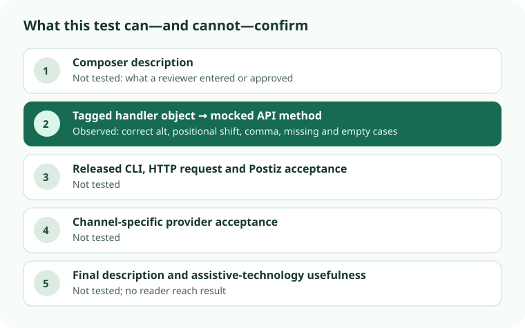

Social image descriptions · 9 Nov 2026 · tagged-handler test
Postiz 2.0.27 handler: one alt value survived, but a missing position shifted another
The exact tagged createPost handler was executed with a mocked PostizAPI.createPost method. One nonempty description reached the intended image[].alt property. In a two-content case, omitting the first alt position put the second image’s intended description on the first image and left the second without alt. This is an in-memory object result, not a released CLI, HTTP, provider or published-post result.

Five captured draft cases
| Input | Captured image property at the mock | Result |
|---|---|---|
| One content, image and description | /fictional/tree.png → alt: "Green tree beside a path" | Attached to the intended image. |
| Two contents and images; only one alt entry, intended for image two | /fictional/first.png → alt: "Description intended for second image"; /fictional/second.png → no alt property | Position shifted silently. |
| JSON-file object with comma in description | /fictional/sky.png → alt: "Red kite, blue sky" | Comma-bearing string stayed intact. |
| Missing alt | /fictional/bowl.png → no alt property | No handler rejection. |
| Empty alt string | /fictional/cup.png → no alt property | No handler rejection. |
Each case requested a draft and made exactly one mocked method call with type: 'draft'. All paths, IDs and descriptions were fictional. The JSON branch was tested with a comma; this run did not execute comma-splitting in the simple --alt branch or the Commander flag parser. The 7 November source audit explains the index-based mapping and source-level JSON POST path.
What was executed
The saved tagged src/commands/posts.ts at commit 425474eec62faec6bb50d3d0d97d8b04683b4d21 matched its recorded 7,621-byte source and SHA-256 4367aff13e3b592194b23f646f79a77b9ff99c9c0354974898c54a549bdb49e9. Node v24.20.0 stripped TypeScript types; the loader removed three checked imports and export keywords to expose the handler in an isolated VM. The runtime createPost region remained byte-identical after module-syntax removal. The VM supplied an in-memory API mock and restricted fictional-file reads, but no HTTP transport or credentials.
Five assertions passed. Changing the runtime field name from alt to notAlt in memory made the one-image assertion fail as expected; the saved tagged source was unchanged. The mutation confirms the assertion detects this property handoff, not that any downstream service accepts it.
Receipt ladder for a real scheduling decision
- Composer: record the description the reviewer approved for each image and format.
- Input and object: align each content position with its media and alt positions; keep an explicit placeholder when an earlier segment has no description. Inspect the generated object rather than the success message alone. This test covers only the tagged handler’s object at a mock.
- Postiz request: separately verify released CLI bytes, parsed arguments, actual request and server acceptance.
- Provider: separately confirm acceptance for the exact channel and post format.
- Final post: inspect the published image description and, where relevant, test usefulness with assistive technology. Neither display nor reader reach follows from an API object.
The v2.0.27 release note claims Instagram alt_text for image posts and carousels. This experiment did not test that claim, video, stories or another provider. The npm tarball was not acquired or retested; a built binary may differ from the tagged source. No final post, screen-reader result or reach effect was observed.